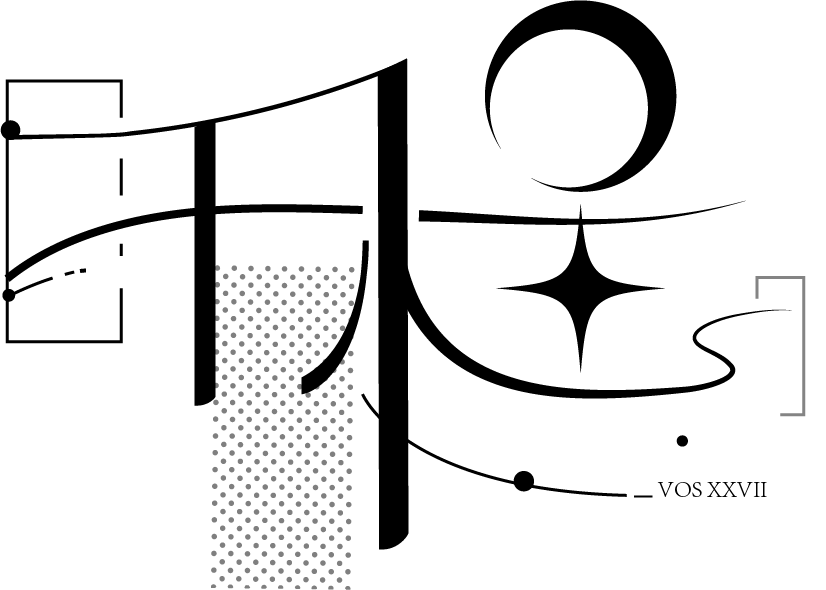

Dynamic Logo
Misson
This dynamic logo was made for the university’s graduation party named 千程 "Qiancheng", meaning "Thousands of Miles".
My goal was to create a supplementary animation that matches the visual style on the basis of the already-designed logo, as a part of the visual identity.
Ideation
Starting from walking a thousand roads, I think of the convergence of many lines. And the shape of
the line has fluidity, in line with the sense of "walking through".
The idea of listing the "thousand things" that graduates have done in text form Alonso comes out,
along with the shape of the text into a path that flows along the lines.
Challenge
The main challenge of making the animation was to improve little by little, to adjust the animation according to the visual experience and the richness. And time was always too limited.
Outcome
In the title film, the dynamic logo was applied.
The final dynamic logo:

Credits
* The dynamic logo was mainly made by me, with the help of Yuting Cao.
* The original logo was designed by Minxuan Yang.
* All the copyrights of this work belong to SJTU Art Center.